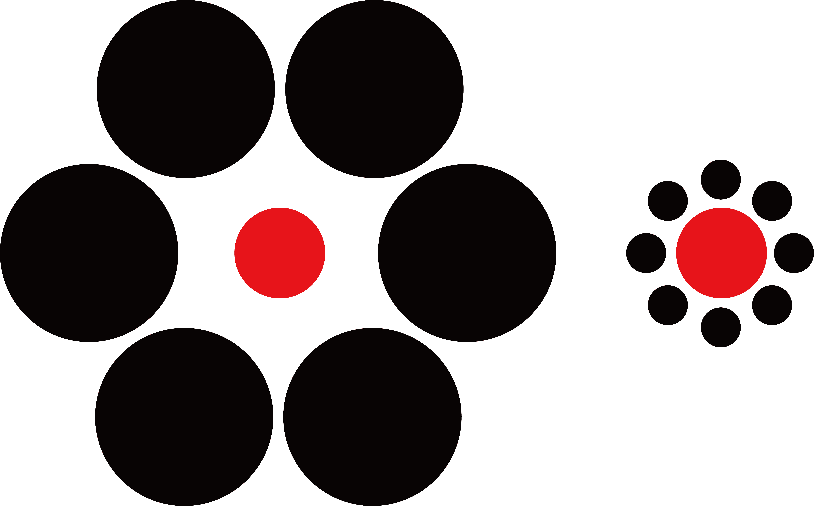

에빙하우스 착시(Ebbinghaus Illusion)는 19세기 독일의 심리학자 헤르만 에빙하우스(Hermann Ebbinghaus)가 발견한 착시 현상이다. 크기가 같은 두 원을 하나는 작은 원들로, 다른 하나는 큰 원들로 둘러싸면 — 작은 원들에 둘러싸인 원이 더 크게, 큰 원들에 둘러싸인 원이 더 작게 보인다.
뇌는 사물의 크기를 절대적인 값이 아니라 주변과의 상대적인 관계로 판단한다. 작은 것들 사이에 있으면 크게 느껴지고, 큰 것들 사이에 있으면 작게 느껴진다. 이것은 우리가 세상을 얼마나 맥락 의존적으로 인식하는지를 보여주는 강력한 증거다.
에빙하우스 착시는 단순한 시각적 오류를 넘어 인지과학에서 중요한 의미를 갖는다. 연구에 따르면 이 착시는 크기 지각뿐 아니라 실제 행동에도 영향을 미친다. 사람들은 착시 속에서 물체를 집을 때 손의 벌림 정도를 실제 크기가 아닌 지각된 크기에 맞추는 경향이 있다.
이는 시각 정보를 처리하는 경로가 두 가지임을 시사한다. 하나는 "무엇인가"를 인식하는 경로, 다른 하나는 "행동을 위한" 경로다. 에빙하우스 착시는 전자에만 영향을 미치며, 이 두 경로가 서로 다른 방식으로 작동한다는 사실을 드러낸다.